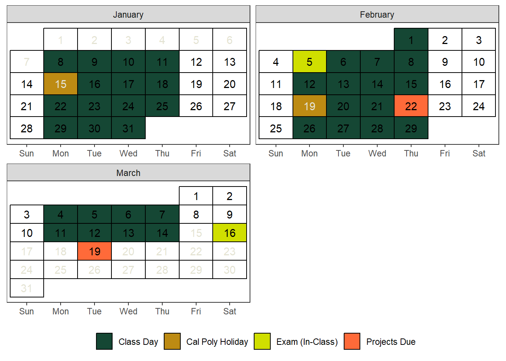

Course Information
Your learning journey begins at Building 186 - Construction Innovations Center. Follow this link to locate the hub of knowledge for your class.
Section 03: MTWR 12:10 – 01:00 PM (186-C302)
Section 04: MTWR 01:10 – 02:00 PM (186-C101)
Section 01: MTWR 03:10 – 04:00 PM (186-C201)
Section 02: MTWR 04:10 – 05:00 PM (186-C302)
Course Schedule
Prerequisite
Entrance to STAT 218 requires at least one of the following be met:
- Grade of C- or better in MATH 115
- Grade of B or better in MATH 96
- Appropriate placement on the Math Placement Exam.
You should have familiarity with computers and technology (e.g., Internet browsing, word processing, opening/saving files, converting files to PDF format, sending and receiving e-mail, etc.).
Required Materials
Required Textbooks: We will use two textbooks. The former textbook covers fundamental theories, while the latter textbook delves into practical applications.
- Samuels, M.L., Witmer, J.A., and Schaffner, A. A. (2016). Statistics for the Life Sciences, 5th ed., Pearson Education Limited.
- Diez D. M., Çetinkaya-Rundel, M., & Barr, C. D. (2022). OpenIntro Statistics .
Technology/Tools: Calculator, Laptop/Chromebook/iPad Device
Online Resources: We will use Rossman/Chance Applet Collection 2021 of our very own Professors at Cal Poly, Allan Rossman & Beth Chance
Grading and Late Submission Policies
Grading
| Assessment | Percentage |
|---|---|
| Midterm Project (Group) | 10% |
| Midterm Exam (In-class) | 15% |
| Lab Assignments (Group) | 15% |
| Weekly Assignments (Individual) | 15% |
| Final Project (Group) | 20% |
| Final Exam (In-class) | 25% |
| Total | 100% |
Letter Grades
Your final grades will be determined based on the total points earned. It’s essential to review the letter grades outlined below for a clear understanding of the grading criteria. Please be aware that I will not “round up” grades at the end of the quarter.
| Letter Grade | Points |
|---|---|
| \(A\) | \(93 \le x\) |
| \(A^-\) | \(90 \le x < 93\) |
| \(B^+\) | \(87 \le x < 90\) |
| \(B\) | \(83 \le x < 87\) |
| \(B^-\) | \(80 \le x < 83\) |
| \(C^+\) | \(77 \le x < 80\) |
| \(C\) | \(73 \le x < 77\) |
| \(C^-\) | \(70 \le x < 73\) |
| \(D^+\) | \(67 \le x < 70\) |
| \(D\) | \(63 \le x < 67\) |
| \(D^-\) | \(60 \le x < 63\) |
| \(F\) | \(x < 60\) |
Assessment Types
Our weekly units/topics will follow a pattern and have been designed to give you practice with the concepts. Below you will find brief descriptions of the types of assignments in this course.
Weekly Assignments
You will have assignments every week, typically consisting of 3-4 daily assignments per week. Please upload them collectively, using a format like ‘Week X Assignment Name Surname’.
These assignments are individual assignments to track your learning progress. You can do these assignments either using your PC/Laptop/iPad/Chromebook or solve them to your notebook. Either way, you should upload them to Canvas. All weekly assignments are due Sundays at 11.59 pm.
Lab Assignments
We will have 7 lab sessions, each followed by a corresponding lab assignment. Lab sessions will be conducted in groups, and the lab assignments will also be group projects. This means that you will submit your lab assignments as a group. Each group is composed of 3-5 students to work and complete the labs together both in the class and after the class.
The due dates will be determined based on the day of the lab sessions, and I will provide advance notice of these deadlines.
Important: Please refrain from including the names of group members who did not participate. In the event of absent students, they must either complete the lab assignment individually or coordinate with their group members to complete it together as a group project. Once the groups are determined, NO CHANGES ARE ALLOWED without prior notification to the instructor.
Exams
Exams are to be taken without the use of textbooks or notes. It is expected that you will take exams as per the scheduled times. In cases of extraordinary circumstances like illness, a family loss, please inform me before the examination.
You won’t be required to computer for the exams, but you may see some questions that involve filling in missing information, interpreting provided R outputs, or selecting the appropriate code to complete a task.
Here are the due dates of exams and projects:
Mon, Feb 5: Midterm Exam (Individual, In-class)
Thu, Feb 22: Midterm Project (Group submission on Canvas)
Sat, Mar 16: Common Final Exam (Individual) - TBD
Tue, Mar 19: Final Project (Group submission on Canvas)
Projects
The overarching goal of the projects in this course is to empower life science students by cultivating a profound sense of agency. This involves actively engaging with the learning process, making informed decisions, and taking ownership of your academic journey. Through the selection of your unique data set, you will have the opportunity to construct a personalized case study, formulate research questions, employ diverse statistical procedures, and effectively communicate your findings. This hands-on approach not only enhances your understanding of the subject matter but also nurtures a proactive and self-directed approach to learning.
Midterm Project: In this midterm project, you will select your own dataset from OpenIntro Data Sets or another suitable source. If your group members share the same major, it’s recommended to choose a dataset related to your field of study.
The project will involve applying various statistical procedures covered in our course. For detailed instructions, refer to the template (Template will be provided later on).
Final Project: In this final project, you will select your own dataset from OpenIntro Data Sets or another suitable source. If your group members share the same major, it’s recommended to choose a dataset related to your field of study.
The project will involve applying various statistical procedures covered in our course. For detailed instructions, refer to the template(Template will be provided later on).
Important
Your final project grade is composed of following components:
- Final Project: 75 points
- Project Peer Evaluation: 20 points
- Self-Reflection Paper: 5 points
Attendance/Participation
Regular attendance is expected from all students to maintain the quality and quantity of their work. In essence, your attendance plays a crucial role in your ability to succeed in every type of assessment conducted in our class, as consistent absences may interrupt your learning and indirectly impact your grades.
I will record attendance during every lecture, not for grading purposes, but to track your learning progress in this class. In case of recurring absences, I will reach out to understand the reasons and work together to find solutions. If you fail to attend over 50% of classes and neglect to submit more than 50% of weekly assignments and lab assignments without prior notification, you may receive a WU
In brief, you must be present in class (both physically and mentally) unless you have an “Excusable” Reason for Missing Class . Please contact with me in advance if you are not coming and do your best to catch up what we have done in that day. You can also schedule a virtual appointment if you have questions about the missing class you had.
Late Submission Policies
I am using Dr Robinson’s late work policy for this class. This quotation below was taken from her syllabus.
“We are living through a challenging time with unique, unusual circumstances. I do not want class deadlines to cause you extreme stress or anxiety. I offer 3 “grace days” – days to turn in the assignment late without a penalty.”
These can be used ONLY on homework assignments and lab assignments (a single group member must be willing to use one of their grace days for the entire group), but NOT exams or group midterm/final projects. These “grace days” can be used all at once on a single assignment or used on separate assignments throughout the quarter. Simply add a comment on the assignment in Canvas and send me an email to let me know you how many “grace days” you want to use on the assignment.
After the expiration of your ‘grace days,’ a 10% grade reduction will be applied for each day that the assignment is overdue. Late submissions will not be accepted after one week from the original due date. Resubmitting assignments is not allowed. Please ensure timely completion to avoid any complications.
Automatic Canvas Settings
Canvas is set up to automatically input 0% for missing assignments (as an incentive to go complete the assignment) and apply the 10% grade deduction policy. I will need to manually adjust your grade when you use your grace days, so it is important for you to leave a note on your assignment and email me. You are responsible for double checking your grade.
If you find yourself with extenuating circumstances beyond the defined late policy, please email me before the due date.